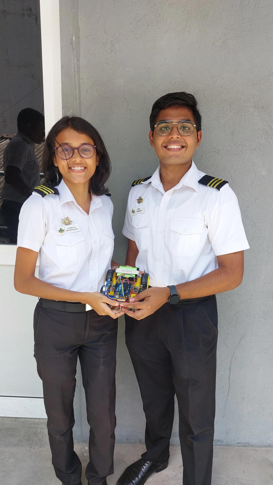

An autonomous wall-following robot maintaining consistent distance from walls using real-time ultrasonic sensor feedback — designed and built for a competitive robotics event held within university premises.

This competition-ready autonomous robot was designed and built for a robotics event at KDU requiring autonomous navigation through maze-like environments. Using only ultrasonic sensors and embedded control algorithms, the robot successfully navigates complex courses by maintaining a consistent distance from walls while detecting and avoiding obstacles.
This project demonstrates the integration of embedded systems, sensor technology, and intelligent control algorithms — specifically PID control and a finite state machine architecture. Built entirely in C++ on Arduino Uno, the system achieves ±1cm wall distance accuracy at up to 0.5m/s.
Main control unit running the navigation algorithm and processing sensor data for real-time decision-making and autonomous operation at competition speed.
Strategically positioned for comprehensive environmental coverage with ±1cm accuracy ensure reliable wall tracking.
Powers and controls DC motors with precise speed modulation via PWM signals, allowing smooth directional changes and optimal navigation performance.
Reliable locomotion with sufficient torque for smooth movement on a two-wheel differential drive chassis with front castor wheel at up to 0.5m/s.
Robust mechanical platform optimised for stability and maneuverability in competition environments across various surface conditions and tight corners.
Power architecture with stable voltage regulation ensuring consistent performance throughout 15-minute competition runs with reliable operation for all components.
The Arduino Uno runs a PID controller that continuously processes ultrasonic sensor data to maintain a target wall distance of 15cm. Proportional, integral, and derivative gains were systematically tuned through iterative testing to achieve smooth, stable operation without oscillation.
A state machine architecture organises robot behaviour across four states: Wall Following, Corner Detection, Obstacle Avoidance, and Recovery. This structured approach ensures predictable behaviour transitions and robust handling of edge cases encountered in competition environments.
HC-SR04 sensor provide comprehensive coverage. Outlier rejection discards anomalous distance values.
A multi-phase turn algorithm includes gradual deceleration approaching corners, a precise pivot using differential drive, and controlled acceleration out of turns — with inertial compensation derived from systematic characterisation testing on the competition surface.
The completed robot successfully navigates along walls with consistent distance maintenance, demonstrating advanced skills in autonomous robotics and embedded systems design. These foundational skills established a strong base for more advanced projects involving computer vision, machine learning, and complex autonomous systems.